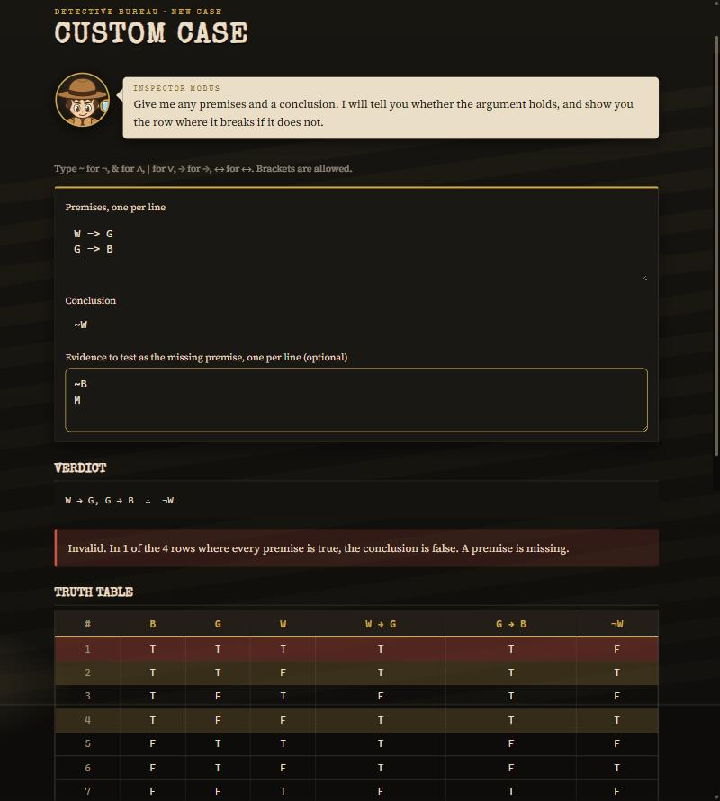
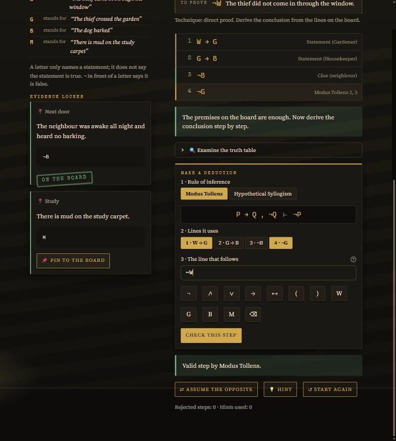

| Title | The Missing Premise |
| Team ID | TeeenTitans |
| Track | A: Gamified Application |
| Unit and topic | Unit I, Logic & Proof Techniques: propositional logic, truth tables, rules of inference, resolution |
| GitHub | github.com/aritradas2005/theMissingPremise |
| Platform, libraries | Python 3.10+, Streamlit (web GUI), pytest (tests) |
| Roll no. | Name | Role | Share |
|---|---|---|---|
| 256109007 | Aritra Das | Logic core, game logic, cases | 34% |
| 256109015 | Prathmesh Khare | Inference module | 33% |
| 256109003 | Ganesh Chavan | Screens and artwork | 33% |
| Total | 100% | ||
The Missing Premise is a detective game for students learning propositional logic. Each case is an argument: witness statements and evidence are the premises, and the accusation is the conclusion. The statements alone never prove the conclusion, so the player must find the piece of evidence that closes the gap (the missing premise) and then prove the conclusion one checked step at a time with rules of inference. Any premises and conclusion can also be typed in and analysed or played. The game demonstrates truth tables, logical equivalence, validity of arguments, rules of inference, resolution, and proof by direct derivation, by contradiction, by contraposition, by exhaustion and disproof by counterexample.
Formulas. Built from atoms P, Q, … with ¬, ∧, ∨, →, ↔ (binding in that order, tightest first; → groups to the right).
Truth table. An assignment gives each of the n atoms a value in {T, F}; there are 2ⁿ of them. A formula is a tautology if true under all, a contradiction if false under all, otherwise a contingency. A ≡ B iff A ↔ B is a tautology.
Validity. P₁, …, Pₖ ∴ C is valid iff (P₁ ∧ … ∧ Pₖ) → C is a tautology. A critical row makes every premise true; a counterexample is a critical row where C is false. Valid means no counterexample.
Missing premise. For an invalid argument, evidence M is the missing premise when P₁, …, Pₖ, M ∴ C is valid and {P₁, …, Pₖ, M} is consistent (a critical row remains).
Rules of inference. P→Q, P ⊢ Q (Modus Ponens); P→Q, ¬Q ⊢ ¬P (Modus Tollens); P→Q, Q→R ⊢ P→R (Hypothetical Syllogism); P∨Q, ¬P ⊢ Q (Disjunctive Syllogism); P∨Q, ¬P∨R ⊢ Q∨R (Resolution); P→Q ⊢ ¬Q→¬P (Contraposition); Addition, Simplification, Conjunction.
Resolution refutation. The premises and ¬C are converted to clauses (CNF); C follows iff the empty clause □ can be derived.
Algorithm.
Every verdict is confirmed a second way, by an automatic resolution proof shown clause by clause.
UI takes typed formulas and button presses and draws tables, proofs and the detective; it contains no logic. Game loads and checks case files, holds the proof lines, evidence and mistakes of the case in play, and computes hints and the score. Logic is all the mathematics. Data files do not say which evidence is the missing premise; the logic module works it out, so a typed case plays exactly like a written one. The screens call the game layer and the logic layer; the logic layer knows nothing about either.


304 automated tests (python -m pytest) cover every module: a scripted solution of all five
cases, play-throughs of each screen, and the samples in test_data/. A selection:
| # | Input | Expected | Actual | Result |
|---|---|---|---|---|
| 1 | P → Q, P ∴ Q | Valid | Valid; 1 critical row, no counterexample | Pass |
| 2 | P → Q, Q ∴ P | Invalid, counterexample P = F, Q = T | Invalid; counterexample P = F, Q = T | Pass |
| 3 | Case 1: W → G, G → B ∴ ¬W; then pin evidence ¬B and apply Modus Tollens twice | Invalid; then valid, both steps accepted, case solved | Invalid (W = G = B = T); valid; ¬G and ¬W accepted; solved with 100 points | Pass |
| 4 | Step check: Modus Ponens on P → Q and Q, claiming P | Rejected with a reason | Rejected: "Affirming the consequent: P → Q and Q does not prove P." | Pass |
| 5 | Edge: no premises, ∅ ∴ P ∨ ¬P; contradictory premises, P, ¬P ∴ Q | Valid (tautology); valid only vacuously | Valid; valid with 0 critical rows, reported as vacuous | Pass |
| 6 | Edge: malformed (P & Q; 60 nested brackets; a formula with 9 atoms | A clear message each time, never a crash | "This bracket is never closed." at position 0; "nested too deeply"; "The limit is 8 atoms." | Pass |
| 7 | Edge: five ↔ inside one another, on the custom case screen | Verdict shown without freezing | Verdict and truth table shown; the resolution proof is skipped with a message | Pass |
| Member | Built | Files and functions |
|---|---|---|
| Aritra Das | Formula tree; parser with positioned error messages and size limits; formatter; evaluator; truth-table builder; validity checks. Game state with direct proof and proof by contradiction, hints, scoring, case validation, custom cases; the five case files. Repository setup. | engine/formula.py; parser.py: tokenize, parse, format_formula;
evaluator.py: get_atoms, evaluate, get_subformulas;
truth_table.py: build_truth_table;
validity.py: classify, are_equivalent, check_argument;
game/case_loader.py: validate_case, build_custom_case;
game_state.py: create_game, collect_clue, assume_opposite, attempt_step;
hints.py: use_hint; scoring.py: score_case;
data/cases/; their tests |
| Prathmesh Khare | Step checker for the nine rules of inference; step-by-step CNF converter and clause generator; automatic proof by resolution refutation; missing-premise search; detection of a lying witness. | engine/rules.py: check_step; cnf.py: to_cnf, to_clauses;
resolution.py: prove_by_resolution;
missing_premise.py: is_consistent, try_candidates, find_liars; their tests |
| Ganesh Chavan | Title screen, case cabinet, case screen with stage tracker, evidence cards and step builder; custom case screen; truth table lab; styling; the backgrounds and the detective character. | app.py; ui/home.py, case_files.py,
custom_case.py, truth_table_lab.py;
ui/board.py: play, show_verdict;
step_builder.py: show_step_builder, submit_step;
tables.py: truth_table_html; board_pieces.py: proof_html;
resolution_view.py: show_resolution_proof;
ui/style.css; tools/make_art.py; their tests |
Achieved. A playable detective game with five cases, in which every step of the player's proof is checked by a rule checker and the missing premise is found by truth table; a custom case screen that gives a verdict, a truth table and a resolution proof for any typed argument and lets it be played; and a truth table lab for any formula, with an equivalence check.
Limitation. The game covers propositional logic only. The truth-table method is exponential, so a case is limited to 8 atoms (256 rows), and a resolution proof that would grow too large is skipped with a message.
Future enhancement. Predicate logic with quantifiers, and an induction module, to cover the rest of Unit I.
References. [1] K. H. Rosen, Discrete Mathematics and Its Applications, 8th ed., McGraw-Hill, 2019, ch. 1. [2] Streamlit documentation, docs.streamlit.io. An AI coding assistant (Claude) was used during development, as permitted for this assessment.